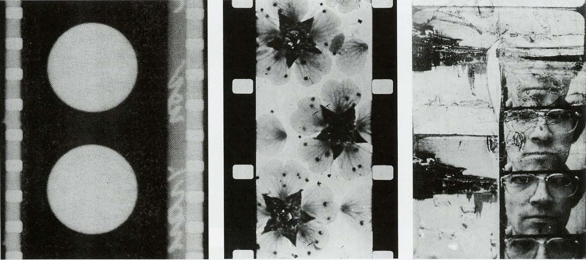

EXPANSIÓN: UNA NUEVA FORMA DE COMUNICAR
PAPER
PROYECTO
VINCULACIÓN
CONCLUSIÓN

Diseño, Tecnología y Sociedad.
Página Web por: Helena Milosevic, Renata Haberle, Sophia Goldsack, Camila Naylor, Nicolás Navia, Ignacia Cardemil, Dolores Artigas, Teresa Sanchez.
Profesores: Daniela Moyano, Ricardo Vega.
Ayudantes: Verónica Gatica, Ariana Cisternas, Emilia Ramírez, Paula Santa María.
Expanded Cinema, Video and Virtual Environments
Por Peter Wibel
Nace en 1944 en Ucrania.
Post-artista conceptual, curator y teórico sobre nuevos medios
Pionero del arte digital y por su trabajo interdisciplinario en los campos de la tecnología, la ciencia y la política, generando gran influencia en la escena mundial del arte realizado con medios digitales.
Sus obras son una reflexión sobre la sociedad actual y sus problemas. En sus exposiciones aborda temas como la globalización, la tecnología y la cultura contemporánea y desafía al espectador a cuestionar su relación con la sociedad y la cultura.
Expanded Cinema, Video and Virtual Environments
Texto escrito por Peter Weibel que aborda la evolución del cine y las artes audiovisuales en relación con el surgimiento de la tecnología digital y las nuevas formas de experimentación visual.
El texto explora cómo el cine tradicional ha evolucionado hacia formas más amplias e inmersivas de expresión, como el videoarte y los entornos virtuales. Weibel analiza cómo la introducción del video como medio artístico permitió a los artistas expandir los límites de la narrativa y la percepción visual, rompiendo con las convenciones tradicionales del cine.
Además, el autor examina la influencia de la tecnología digital en la creación de entornos virtuales y cómo estos espacios digitales han transformado la experiencia del espectador, brindando la posibilidad de una inmersión total en la obra de arte.
Ideas relevantes:
- Rompe con las convenciones tradicionales del cine a través del videoarte.
- Influencia de la tecnología digital en la creación de entornos virtuales.
- Transformación de la experiencia del espectador mediante la inmersión en entornos virtuales.
- Ampliación de las posibilidades creativas y la experiencia del espectador gracias a la tecnología digital.
El paper se basa en la exploración y expansión de las posibilidades del arte y el cine, de una manera menos tradicional explorando pantallas, interacción con el espectador, el video y entornos virtuales inmersivos.
Proyecto COCA
Creado por SOSO
SOSO
https://www.sosolimited.com/
Sosolimited es una empresa que reúne diseñadores/as, arquitectos/as , ingenieros/as y artistas con el fin de crear experiencias visuales creativas e interactivas que relacionan el arte, la tecnología, comunicaciones y el diseño.
“Nuestra visión es un mundo en el que el diseño y la tecnología trabajen juntos para desbloquear nuestro potencial creativo colectivo y acercarnos más a nosotros mismos, a los demás y al planeta.” (soso)
COCA
COCA es un centro comunitario multidisciplinario de artes en St. Louis, en donde implementaron un dinámico muro de reconocimiento que canaliza la energía y el movimiento de las personas en la comunidad.
La experiencia permite explorar y crear con sus cuerpos, dirigiendo el movimiento y el color de ondas fluidas de casi un millón de partículas con sus movimientos, dando vida a las pantallas.